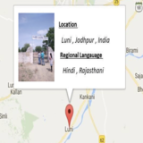

|
Research Interests
I am broadly interested in the field of Computer Vision and Deep Learning. Particularly, I like to
think upon Visual Scene Understanding (VSU) from images and videos, effective methods of
Domain Adaptation & Transfer Learning for VSU, building systems that learn with minimal
or no supervision and systems that generalize well in real and diverse scenarios.
I am also open to any topic that would be interesting or fun to explore and pursue.
|
|
Updates
- New 1 paper on Future Frame Depth Prediction communicated to ECCV 2020
- New I am joining SketchX Lab, University of Surrey as a PhD student in September 2020
- New Our paper titled "What's There in The Dark" has been selected in TOP 10% Papers in ICIP19
- 1 paper on Light-weight Saliency Detection is uploaded on Arxiv
|
|
|
What's There in the Dark
Sauradip Nag
,
Saptakatha Adak
,
Sukhendu Das
International Conference in Image Processing (ICIP), 2019
(Spotlight Paper)
Taipei, Taiwan
[ H5-Index : 45 ]
Abstract
/
Code
/
BibTex
Scene Parsing is an important cog for modern autonomous driving systems. Most of the works in
semantic segmentation pertains to day-time scenes with favourable weather and illumination
conditions. In this paper, we propose a novel deep architecture, NiSeNet, that performs semantic
segmentation of night scenes using a domain mapping approach of synthetic to real data. It is a
dual-channel network, where we designed a Real channel using DeepLabV3+ coupled with an MSE loss
to preserve the spatial information. In addition, we used an Adaptive channel reducing the
domain gap between synthetic and real night images, which also complements the failures of Real
channel output. Apart from the dual channel, we introduced a novel fusion scheme to fuse the
outputs of two channels. In addition to that, we compiled a new dataset Urban Night Driving
Dataset (UNDD); it consists of 7125 unlabelled day and night images; additionally, it has 75
night images with pixel-level annotations having classes equivalent to Cityscapes dataset. We
evaluated our approach on the Berkley Deep Drive dataset, the challenging Mapillary dataset and
UNDD dataset to exhibit that the proposed method outperforms the state-of-the-art techniques in
terms of accuracy and visual quality.
@inproceedings{nag2019s,
title={What’s There in the Dark},
author={Nag, Sauradip and Adak, Saptakatha and Das, Sukhendu},
booktitle={2019 IEEE International Conference on Image Processing (ICIP)},
pages={2996--3000},
year={2019},
organization={IEEE}
}
|
|
|
Facial Micro-Expression Spotting and Recognition using Time Contrasted Feature with
Visual Memory
Sauradip Nag
,
Ayan Kumar Bhunia
,
Aishik Konwer,
Partha Pratim Roy
International Conference on Acoustics, Speech and Signal Processing (ICASSP), 2019
Brighton, United Kingdom
[ H5-Index : 80 ]
Abstract
/
BibTex
Facial micro-expressions are sudden involuntary minute muscle movements which reveal true
emotions that people try to conceal. Spotting a micro-expression and recognizing it is a major
challenge owing to its short duration and intensity. Many works pursued traditional and deep
learning based approaches to solve this issue but compromised on learning low level features and
higher accuracy due to unavailability of datasets. This motivated us to propose a novel joint
architecture of spatial and temporal network which extracts time-contrasted features from the
feature maps to contrast out micro-expression from rapid muscle movements. The usage of time
contrasted features greatly improved the spotting of micro-expression from inconspicuous facial
movements. Also, we include a memory module to predict the class and intensity of the
micro-expression across the temporal frames of the micro-expression clip. Our method achieves
superior performance in comparison to other conventional approaches on CASMEII dataset.
@inproceedings{nag2019facial,
title={Facial Micro-Expression Spotting and Recognition using Time Contrasted Feature with Visual Memory},
author={Nag, Sauradip and Bhunia, Ayan Kumar and Konwer, Aishik and Roy, Partha Pratim},
booktitle={ICASSP 2019-2019 IEEE International Conference on Acoustics, Speech and Signal Processing (ICASSP)},
pages={2022--2026},
year={2019},
organization={IEEE}
}
|
|
|
CRNN based Jersey-Bib Number/Text Recognition in Sports and Marathon Images
Sauradip Nag
,
Raghavendra Ramachandra
,
Palaiahnakote Shivakumara
,
Umapada Pal
,
Tong Lu
,
Mohan Kankanhalli
International Conference on Document Analysis and Recognition (ICDAR), 2019
Sydney, Australia
[ H5-Index : 26 ]
Abstract
/
BibTex
The primary challenge in tracing the participants in sports and marathon video or images is to detect and localize the jersey/Bib number that may present in different regions of their outfit captured in cluttered environment conditions. In this work, we proposed a new framework based on detecting the human body parts such that both Jersey Bib number and text is localized reliably. To achieve this, the proposed method first detects and localize the human in a given image using Single Shot Multibox Detector (SSD). In the next step, different human body parts namely, Torso, Left Thigh, Right Thigh, that generally contain a Bib number or text region is automatically extracted. These detected individual parts are processed individually to detect the Jersey Bib number/text using a deep CNN network based on the 2-channel architecture based on the novel adaptive weighting loss function. Finally, the detected text is cropped out and fed to a CNN-RNN based deep model abbreviated as CRNN for recognizing jersey/Bib/text. Extensive experiments are carried out on the four different datasets including both bench-marking dataset and a new dataset. The performance of the proposed method is compared with the state-of-the-art methods on all four datasets that indicates the improved performance of the proposed method on all four datasets.
@inproceedings{nag2019crnn,
title={CRNN Based Jersey-Bib Number/Text Recognition in Sports and Marathon Images},
author={Nag, Sauradip and Ramachandra, Raghavendra and Shivakumara, Palaiahnakote and Pal, Umapada and Lu, Tong and Kankanhalli, Mohan},
booktitle={2019 International Conference on Document Analysis and Recognition (ICDAR)},
pages={1149--1156},
year={2019},
organization={IEEE}
}
|
|
|
A New COLD Feature based Handwriting Analysis for Ethnicity/Nationality Identification
Sauradip Nag
,
Palaiahnakote Shivakumara
,
Wu Yirui
,
Umapada Pal
,
Tong Lu
International Conference on Frontiers in Handwriting Recognition (ICFHR), 2018
Niagara Falls, USA
[ H5-Index : 18 ]
Abstract
/
BibTex
Identifying crime for forensic investigating teams
when crimes involve people of different nationals is challenging.
This paper proposes a new method for ethnicity (nationality)
identification based on Cloud of Line Distribution (COLD)
features of handwriting components. The proposed method, at
first, explores tangent angle for the contour pixels in each row
and the mean of intensity values of each row in an image for
segmenting text lines. For segmented text lines, we use tangent
angle and direction of base lines to remove rule lines in the
image. We use polygonal approximation for finding dominant
points for contours of edge components. Then the proposed
method connects the nearest dominant points of every dominant
point, which results in line segments of dominant point pairs. For
each line segment, the proposed method estimates angle and
length, which gives a point in polar domain. For all the line
segments, the proposed method generates dense points in polar
domain, which results in COLD distribution. As character
component shapes change, according to nationals, the shape of
the distribution changes. This observation is extracted based on
distance from pixels of distribution to Principal Axis of the
distribution. Then the features are subjected to an SVM classifier
for identifying nationals. Experiments are conducted on a
complex dataset, which show the proposed method is effective
and outperforms the existing method.
@inproceedings{nag2018new,
title={New COLD Feature Based Handwriting Analysis for Enthnicity/Nationality Identification},
author={Nag, Sauradip and Shivakumara, Palaiahnakote and Wu, Yirui and Pal, Umapada and Lu, Tong},
booktitle={2018 16th International Conference on Frontiers in Handwriting Recognition (ICFHR)},
pages={523--527},
year={2018},
organization={IEEE}
}
|


|
Offline Extraction of Indic Regional Language from Natural Scene Image Using Text Segmentation and Deep Convolutional Sequence
Sauradip Nag
,
Pallab Ganguly
,
Sumit Roy
,
Sourab Jha
,
Krishna Bose
,
Abhishek Jha
,
Abhirup Das,
Kousik Dasgupta
International Conference on Computational Intelligence, Communications, and Business Analytics (CICBA), 2018
Kalyani, India
Abstract
/
arXiv
/
BibTex
With the large scale explosion of images and videos over the internet, efficient hashing methods
have been developed to facilitate memory and time efficient retrieval of similar images.
However, none of the existing works use hashing to address texture image retrieval mostly
because of the lack of sufficiently large texture image databases. Our work addresses this
problem by developing a novel deep learning architecture that generates binary hash codes for
input texture images. For this, we first pre-train a Texture Synthesis Network (TSN) which takes
a texture patch as input and outputs an enlarged view of the texture by injecting newer texture
content. Thus it signifies that the TSN encodes the learnt texture specific information in its
intermediate layers. In the next stage, a second network gathers the multi-scale feature
representations from the TSN’s intermediate layers using channel-wise attention, combines them
in a progressive manner to a dense continuous representation which is finally converted into a
binary hash code with the help of individual and pairwise label information. The new enlarged
texture patches from the TSN also help in data augmentation to alleviate the problem of
insufficient texture data and are used to train the second stage of the network. Experiments on
three public texture image retrieval datasets indicate the superiority of our texture synthesis
guided hashing approach over existing state-of-the-art methods.
@inproceedings{bhunia2019texture,
title={Texture synthesis guided deep hashing for texture image retrieval},
author={Bhunia, Ayan Kumar and Perla, Sai Raj Kishore and Mukherjee, Pranay and Das, Abhirup and
Roy, Partha Pratim},
booktitle={2019 IEEE Winter Conference on Applications of Computer Vision (WACV)},
pages={609--618},
year={2019},
organization={IEEE}
}
|
|
|
Saliency Detection: PyTorch implementation of a CVPR 2019 Publication
PyTorch implementation of the paper "Pyramid Feature Attention Network for Saliency
Detection", published at CVPR 2019.
Code
/
Paper
|
|
|
Single Image Super Resolution
Image super resolution aims to increase the resolution of an image by generating pixels which
interpolate best between a given Low Resolution and the required High Resolution image. I built a
deep learning based model for this purpose. A large amount of diverse data was also collected to
train this model. The model was implemented in Keras and comes with an easy to use interface. This
was my project as an intern under
Prof. A. V. Subramanyam
of
IIIT, Delhi
.
Code
/
Papers on Super Resolution
|
|
|
Mixture Density Networks
Mixture Density Networks (MDNs) are an interesting way to address multimodality (where the input and
output hold a one-to-many relationship). In such scenarios, instead of directly predicting the
output we model the probability distribution of the output as a weighed mixture of several Gaussians
from which we sample the actual output.
In this project, I implemented univariate and bivariate MDNs in Python using Tensorflow.
Code
/
Original Paper
|
|
|
Character Level Language Model
Auto-correct and auto-complete, which have now become a standard feature in almost all digital
keyboards, make use of a language model at its core. In this project, I built a LSTM based
character-level language model that aims to predict the next character from a sequence of input
characters. The code for this project was written in Python using Tensorflow.
Code
|
|
|
Lane Detection in NFS: Underground 2
Self Driving cars are one of the fascinating technologies in this modern world. Though the entire
process, from perceiving the surroundings to getting the car to move, is fairly complex, the first
step usually begins with detection of lanes which guide the vehicle on the road. In this project, I
attempt to do the same in one the popular games "NFS: Underground 2" using OpenCV in Python.
Code
|
|
|
Machine Learning Algorithms
In this project, I implemented various Machine Learning algorithms from scratch in Python using only
Numpy.
Code
|
|
.png)